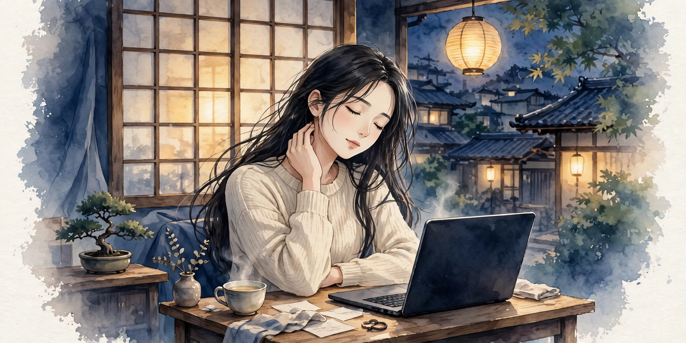

京都で年末の忙しさに気になる首こり｜うつむき姿勢の続く日の過ごし方とセルフケア、受診の目安

年賀状書きに大掃除、仕事納めに忘年会、帰省や旅行の準備——。12月に入ると予定が立て込み、気づけば首の後ろが重い、うつむいたままの姿勢が長く続く——。 普段は気にならない首のこり感が、年末の忙しさの中で目立ってくる、という方は少なくありません。 この記事では、年末の時期に感じる首こりについて、一般的な解説と、うつむき姿勢が続く用事や寒さ、睡眠の乱れなど考えられる要因の整理、予定が続く時期にも取り入れられるセルフケア、受診の目安をまとめました。 デスクワークの後に感じる首こりや、同じ年末の忙しさの中で感じる肩こりとは場面を分け、ここでは年末の時期とうつむき姿勢の続く過ごし方に焦点を当てます。関連する読み物は、記事末尾の関連ページからご覧いただけます。
年末の時期の首こりとは
「首こり」は、首の後ろや付け根、首から肩にかけての重さや張り、こわばりを感じる状態を表す一般的な言い方です。 それ自体が病名というわけではなく、感じ方は人それぞれです。
年末は、年賀状書きや大掃除、買い物や集まりの準備など、うつむき気味の姿勢が続く用事が重なるうえに、寒さの中で出かける日や睡眠時間が短くなる日も続きやすい時期です。 いくつかの負担が同じ時期に重なるため、普段の週では表に出にくいこり感が、この時期に目立ってくることがあります。
年末の首こりに考えられる要因
年末の首こりの背景には、この時期ならではの用事と過ごし方の積み重ねが重なっていることがあります。一般に挙げられる要因を、ご自身の体と日常を振り返るための整理としてまとめました。
- うつむき姿勢の続く作業：年賀状書きや年末の事務作業、スマートフォンでの連絡や買い物の確認など、頭を下げた姿勢が続くと、首の後ろに負担が集まりやすくなります
- 大掃除での高いところ・低いところの作業：棚の上を拭くために見上げる姿勢や、床を磨くためにかがむ姿勢を繰り返すと、首まわりに負担がたまりやすくなります
- 寒さと室内外の温度差：12月の寒さで首まわりは冷えやすく、暖房の効いた室内と外の行き来を繰り返すと、こわばりを感じやすくなることがあります
- 予定の立て込みと睡眠の乱れ：仕事納めに向けての追い込みや集まりが続き、就寝が遅くなって睡眠が短くなると、前日の張り感を持ち越したまま朝を迎えやすくなります
- 長い移動と座りっぱなしの時間：帰省や旅行の移動、年末の集まりでの長時間の着席など、同じ姿勢が続くと、首や肩まわりに負担が集まりやすくなります
- 慌ただしさによる力み：次の予定や用事に気持ちが先行すると、無意識に肩が上がり、首まわりに力が入ったまま過ごしやすくなります
東洋医学では、首や肩まわりのこり感は体を巡る「気」や「血」の滞りと結びつけて捉え、同じ姿勢の続く日々や冷えが、その滞りと関係すると考えます。
年末の忙しい時期に取り入れられるセルフケア
予定が続く時期でも、作業や外出の合間に取り入れやすい対処をまとめました。痛みが強いときは無理をせず、痛みのない範囲で行ってください。
- 作業は小分けにして、合間に首を動かす：年賀状書きは枚数や時間で区切り、一区切りごとに首を前後左右にゆっくり動かす、両肩をすくめてストンと落とすなど、小さな動きをはさんでみてください
- 首の後ろを温める：蒸しタオルを首の後ろに当てる、帰宅後に湯船にゆっくりつかるなど、冷えやすい首まわりを温める時間をとってみてください
- 画面の位置と姿勢を見直す：スマートフォンやパソコンを見るときは、画面を目線に近づけ、うつむきっぱなしにならないようにしてみてください
- 荷物は左右に分ける、台車やキャリーを使う：買い物は両手に分ける、重いものは台車やキャリーバッグを使うなど、片側だけに負担が寄らないようにしてみてください
- 買い物や移動の合間に座って休む：外出の日は、腰かけて休む場所を先に決めておき、首の様子を見ながら短い休息をはさんでみてください
- 寝る前の作業に区切りをつける：年賀状やスマートフォンは時間を決めて終え、忙しい週こそ睡眠時間を確保するようにしてみてください
- 強いストレッチや自己流の強いもみほぐしは避ける：合わない動きはかえって負担になることがあります。鋭い痛みやしびれが出る動きは中止し、様子を見てください
12月の京都は、知恩院の除夜の鐘をはじめ、寒さの中での寺社参拝も楽しめる時期です。 お出かけの際は暖かい服装で首元を冷やさないようにし、距離を欲張らず、途中で腰かけて休む場所を先に決めておくと、首や肩の様子を見ながら無理なく回れます。
こんなときは医療機関へ
首こりの多くは日常の積み重ねと関係しますが、中には早めの確認が必要な場合もあります。次のような場合は、整形外科や内科など医療機関への受診をご検討ください。
- 首や肩に強い痛みがあり、首を動かしにくい、振り向きにくい
- 腕や手のしびれ、力が入りにくい感じをともなう
- 発熱や、首の腫れ・熱感をともなう
- 転んだりぶつけたりした後に、痛みや重さが続いている
- 首の張りや痛みが日に日に強くなる、感じる頻度が増えている
- 市販薬を使ってもおさまらず、仕事や日常生活に支障が出ている
- 胸の違和感や息苦しさとあわせて、首や肩の痛みを感じる
当サロンは医療機関ではなく、施術はリラクゼーションと美容を目的としたものです。診断や治療は行いませんので、 気になる症状がある場合はまず医療機関へご相談ください。
サロンのご案内 — ステラアルタイル（京都）
ステラアルタイルは、阪急 京都河原町駅・京阪 祇園四条駅・阪急 烏丸駅からアクセスできる、京都市内の女性専用プライベートサロンです （詳しい住所は、ご予約が確定した方にご案内しています）。 施術は、オイルマッサージと美容整体を組み合わせた構成で、最初にカウンセリングでお体の状態やお悩みをうかがいながら進めます。圧の強さも都度調整します。 夕方17時からの営業のため、お仕事帰りや観光の後の時間にもご利用いただけます。
基本コースは90分・10,000円（税込）です。営業時間は月曜〜土曜の17:00〜22:00（日曜休み）、完全予約制で営業しています。 なお、現在は近日開院予定のため、ご予約の受付はまだ開始していません。 ご予約の流れは、まずLINE公式アカウントを友だち追加していただき、開院のお知らせをお待ちください。受付開始後に、LINEからご予約いただける形になります。